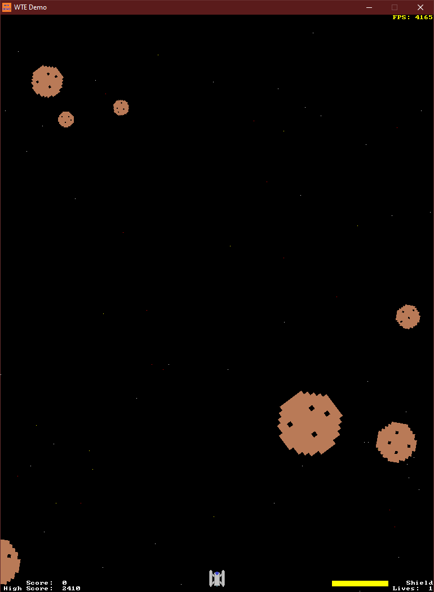
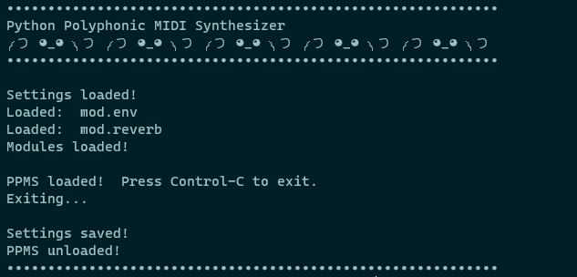

Hello and welcome to the personal website of Matthew Evans!
I've been interested in the field of Computer Science since I learned BASIC on an IBM PS/1. In my free time I enjoy music, video games and reading.
Below are my personal projects I've been working on.
I've been interested in the field of Computer Science since I learned BASIC on an IBM PS/1. In my free time I enjoy music, video games and reading.
Below are my personal projects I've been working on.
WTEngineA cross-platform C++17 game engine that uses Allegro and PhysicsFS. Has an ECS based memory manager, messaging system, dynamic maps for configuration variables, and a programmable menu interface. Performs 2D rendering and has simple controller support. |
 |
ppmsPython Polyphonic MIDI Synthesizer. Digital synthesizer playable with a MIDI input device. Has plug-in support for modules that alter the signal. |
 |